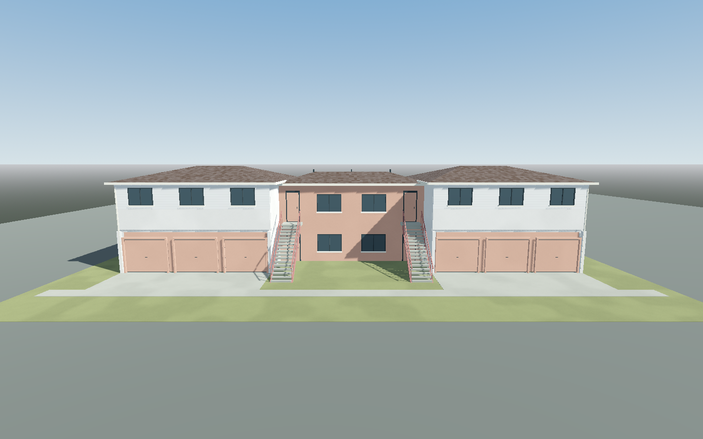
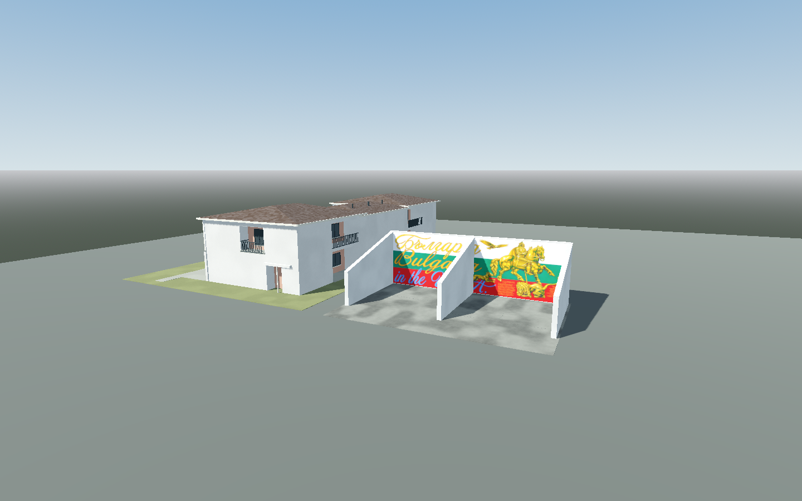
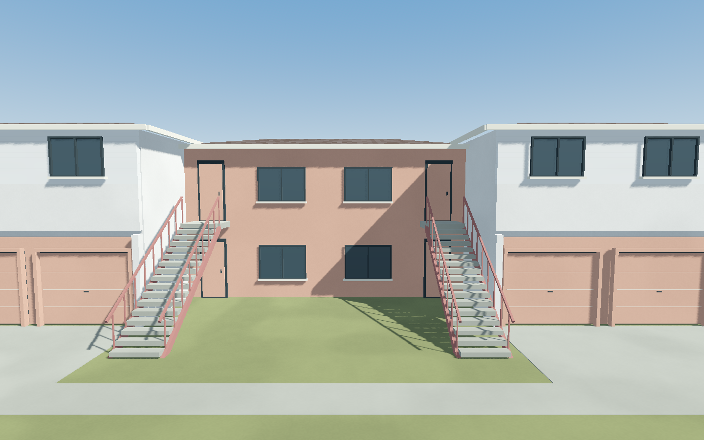
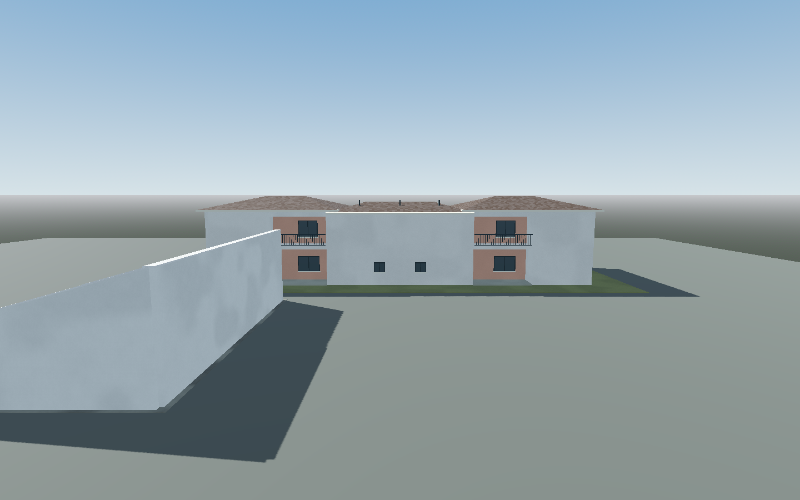

Final isolated native study views. Independent scoped art PASS; unpromoted, with inferred dimensions and placement. No gameplay, stair or release acceptance. Source credits, limitations and reproduction profile.



